Introduction
In this part, we will go through some basic definitions as a reminder.

What is Statistics?
Data is a collection of information collected by observations, measurements, research or analysis. One of the main characteristics of today’s world is to be data generative. According to the estimates, at least 2.5 quintillion bytes of data is produced every day.
Question : How to make such an amount of data valuable?
Answer: Statistics!
What is Statistics?
There are several definitions of statistics in the literature.
Definition 1:
Formally: “Statistics” is the science of learning from data, and of measuring, controlling and communicating uncertainty. (American Statistical Association (ASA))
Informally: Statistics is the art of learning from data.
There are mainly two forms of the statistics.
Descriptive Statistics is primarily about summarizing a given data set through numerical summaries and graphs, and can be used for exploratory analysis to visualize the information contained in the data and suggest hypotheses etc.
Inferential Statistics is concerned with methods for making conclusions about a population using information from a sample, and assessing the reliability of, and uncertainty in, these conclusions.
Data and Data Types
The data types or groups are an important concept of statistics, which needs to be understood, to correctly apply statistical analysis to your data and therefore to correctly conclude certain assumptions about it.
Data is plural of datum which is an abstraction.
Datum is a single quantity or quality of a real-world entity such as person, object and event.
A data set consists of the data related to a collection of entities which are described in terms of a set of attributes.
Both data and data set can be categorized into several groups.
The data types or groups are an important concept of statistics, which needs to be understood, to correctly apply statistical measurements to your data and therefore to correctly conclude certain assumptions about it.
Understanding data types results in doing exploratory data analysis which the one of the important of the data analysis project.
In general attribute, we can divide data as
Quantitative data deals with numbers and things you can measure objectively: dimensions such as height, width, and length.
Qualitative data data deals with characteristics and descriptors that can’t be easily measured, but can be observed subjectively: smells, tastes.
These two data attributes have subgroups.
Quantitative Attribute
Discrete Data: We speak of discrete data if its values are distinct and separate. In other words: We speak of discrete data if the data can only take on certain values. This type of data can not be measured but it can be counted. For example, Number of defective item in a box, Number of children in a household.
Continuous Data: Continuous Data represents measurements and therefore their values cannot be counted but they can be measured. For example, temperature, height, or weight.
Interval Data Interval values represent ordered units that have the same difference. Therefore we speak of interval data when we have a variable that contains numeric values that are ordered and where we know the exact differences between the values. It can be either discrete or continious.
The problem about the interval data is zero have no real meaning. That’s why a lot of descriptive and inferential statistics cannot be applied. For example, Temperature.
- Ratio Data : Ratio values are also ordered units that have the same difference. Ratio values are the same as interval values, with the difference that they do have an absolute zero. In other words, zero has its real meaning. For example, age, distance
Qualitative Attribute
Nominal Data: Nominal values represent discrete units and are used to label variables, that have no quantitative value. Just think of them as labels. Note that nominal data that has no order. For example, Gender: Male, Female
Binary Data:
Ordinal Data: Ordinal values represent discrete and ordered units. As you would guess from it’s name, order have an importance. For example,
1- Totally disagree.
2- Disagree.
3- Neither agree nor disagree.
4- Agree.
5- Totally Agree.
We can also categorized data set types into several groups, For example,
Cross-Sectional: It is a collection of observations (behaviours) for multiple subjects(entities) at single point in time.
Time Series: It is a collection of observations (behaviours) for a single subject(entity) at different time intervals (generally equally spaced)
Panel Data: It is usually called as Cross-sectional Time-series data as it a combination of above mentioned types, i.e., collection of observations for multiple subjects at different time points.
Circular Data: It is the data that is measured on a circle in degrees or radians.
Image Data: Image data refers to a collection of numerical values that represent the colors and intensities of pixels in an image.
and more…
Exploratory Data Analysis (EDA)
It is a process of exploring your data set through some techniques such as visualization, transformation etc. It is called EDA.
It has a iterative form.
Generate questions about your data, called developing research questions(RQ).
Search for answers by visualizing, transforming, and modelling your data.
Use what you learn to refine your questions and/or generate new questions.
The main purpose behind EDA is understand your data and draw a pattern for your upcoming analysis. In this process, a researcher should feel free to investigate every idea. In other words, EDA does not have any certain frame or rules. Thus, some of your idea will be dead and some of them will be alive after this which makes it an iterative process.
The easiest way of doing EDA is to use questions as a guide of your investigation. Although EDA does not have any certain rules, there are some suggestions while generating a question because you can generate large amount of quantity by asking a qualified question. It also narrows down a broad topic of interest into specific area of study.
Two types question will be useful while discovering your data.
What type of variation occurs within variable?
What type of covariance occurs between variables?
However, you should consider more details to develop well research questions.
As data and data types, RQ can be classified into different categories based on type of research to be done, which are quantitative research, qualitative research and mixed.
Quantitative Research & Questions
It includes the population to be studied, dependent and independent variables, and the research design to be used. They are not answerable with Yes and No which results in such questions do not have words such as Is, Are, Do, Does.
It can be further categorized into three types: descriptive, comparative, and relationship.
Descriptive research questions aim to measure the responses of a studys population to one or more variables or describe variables that the research will measure. These questions typically begin with what.
Comparative research questions aim to discover the differences between two or more groups for an outcome variable. These questions can be causal, as well. For instance, the researcher may compare a group where a certain variable is involved and another group where that variable is not present.
Relationship research questions seek to explore and define trends and interactions between two or more variables. These questions often include both dependent and independent variables and use words such as association or trends.
Qualitative Research & Questions
These questions generally aim to discover, explain, or explore. They have also subgroups. Here are some of them.
Descriptive research questions attempt to describe a phenomenon.
Explanatory research questions seek to expound on a phenomenon or examine reasons for and associations between what exists.
Ideological research questions are used in research that aims to advance specific ideologies of a position.
You can investigate some examples for quantitative and qualitative research questions.

Example for RQs
To understand the details of constructing an appropriate research question, you can have a look at the blog.
In data mining approach, EDA can be cross-classified into two ways.
- Numerical and Graphical
Numerical means that you are investigating the variable/s using descriptive statistics like mean, standard deviation, median and IQR.
Graphical implies that you are using plots to explore the properties of the variable/s.
- Univariate and Multivariate
Univariate means that you are investigating one variable.
Multivariate means that you are handling with two or more variables. Usually, two variables are considered in the multivariate EDA.
It is recommended to perform Univariate EDA, before applying multivariate EDA.
Application
Please install
summarytoolsDesctoolstable1latticeggplot2(It is used for the example dataset.)Hmiscpsych
Throughout this class, we will be working with the diamonds dataset, It is a dataset that comes with the ggplot2 package, which means it is readily available for use. Let’s take some time to become acquainted with the dataset.
library(ggplot2)
head(diamonds)The columns expressions
| Name | Expression |
|---|---|
| price | price in US dollars \(\$326-\$18,823\) |
| carat | weight of the diamond 0.2-5.01 |
| cut | quality of the cut Fair, Good, Very Good, Premium, Ideal |
| color | diamond color J (worst) to D (best) |
| clarity | measurement of how clear the diamond is I1 (worst), SI2, SI1, VS2, VS1, VVS2, VVS1, IF (best) |
| x | length in mm 0-10.74 |
| y | width in mm 0-58.9 |
| z | depth in mm 0-31.8 depth |
| total | depth percentage 43-79 |
| table | width of top of diamond relative to widest point |
We can use dim() command to extract the dimension of the
dataset.
dim(diamonds)## [1] 53940 10This dataset contains information about 53,940 round-cut diamonds measured by 10 variables.
After this, we should check the class of the variables. The checking the class of variables in R is an essential step before proceeding to the analysis, because wrong class type may affect your analysis negatively.
str(diamonds)## tibble [53,940 x 10] (S3: tbl_df/tbl/data.frame)
## $ carat : num [1:53940] 0.23 0.21 0.23 0.29 0.31 0.24 0.24 0.26 0.22 0.23 ...
## $ cut : Ord.factor w/ 5 levels "Fair"<"Good"<..: 5 4 2 4 2 3 3 3 1 3 ...
## $ color : Ord.factor w/ 7 levels "D"<"E"<"F"<"G"<..: 2 2 2 6 7 7 6 5 2 5 ...
## $ clarity: Ord.factor w/ 8 levels "I1"<"SI2"<"SI1"<..: 2 3 5 4 2 6 7 3 4 5 ...
## $ depth : num [1:53940] 61.5 59.8 56.9 62.4 63.3 62.8 62.3 61.9 65.1 59.4 ...
## $ table : num [1:53940] 55 61 65 58 58 57 57 55 61 61 ...
## $ price : int [1:53940] 326 326 327 334 335 336 336 337 337 338 ...
## $ x : num [1:53940] 3.95 3.89 4.05 4.2 4.34 3.94 3.95 4.07 3.87 4 ...
## $ y : num [1:53940] 3.98 3.84 4.07 4.23 4.35 3.96 3.98 4.11 3.78 4.05 ...
## $ z : num [1:53940] 2.43 2.31 2.31 2.63 2.75 2.48 2.47 2.53 2.49 2.39 ...To find out the class of a specific variable, you can use
class() command.
class(diamonds$price) #class function show the class of a variable ## [1] "integer"You can check whether the variable belongs to a specific class using
is.classname() type function.
is.factor(diamonds$price)## [1] FALSEis.integer(diamonds$price)## [1] TRUEYou can change the class of object to the desired one by
as. type functions.
a<-as.factor(diamonds$price)
is.factor(a)## [1] TRUENumerical Summary of Data
The information that gives a quick and simple description of the data including mean, median, mode, minimum value, maximum value, range, standard deviation, etc are called summary statistics. It is an essential step to identify the certain pattern of your dataset like the presence of the missing observations or outliers. Looking at the descriptive statistics of all the data can also serve as a source for generating research questions.
The easiest way to obtain of summary statistics of the variables in
the dataset is to use Rs base summary() function whose
output is not very nice.
You will get the mean, quantiles, and min/max for numeric variables, and get frequency table for categorical one, but thats all.
summary(diamonds)## carat cut color clarity depth
## Min. :0.2000 Fair : 1610 D: 6775 SI1 :13065 Min. :43.00
## 1st Qu.:0.4000 Good : 4906 E: 9797 VS2 :12258 1st Qu.:61.00
## Median :0.7000 Very Good:12082 F: 9542 SI2 : 9194 Median :61.80
## Mean :0.7979 Premium :13791 G:11292 VS1 : 8171 Mean :61.75
## 3rd Qu.:1.0400 Ideal :21551 H: 8304 VVS2 : 5066 3rd Qu.:62.50
## Max. :5.0100 I: 5422 VVS1 : 3655 Max. :79.00
## J: 2808 (Other): 2531
## table price x y
## Min. :43.00 Min. : 326 Min. : 0.000 Min. : 0.000
## 1st Qu.:56.00 1st Qu.: 950 1st Qu.: 4.710 1st Qu.: 4.720
## Median :57.00 Median : 2401 Median : 5.700 Median : 5.710
## Mean :57.46 Mean : 3933 Mean : 5.731 Mean : 5.735
## 3rd Qu.:59.00 3rd Qu.: 5324 3rd Qu.: 6.540 3rd Qu.: 6.540
## Max. :95.00 Max. :18823 Max. :10.740 Max. :58.900
##
## z
## Min. : 0.000
## 1st Qu.: 2.910
## Median : 3.530
## Mean : 3.539
## 3rd Qu.: 4.040
## Max. :31.800
## Interpretation
The average of carat concentration is 0.8. The minimum of carat is 0.2, while its maximum is 5. The half of the carat is below or above 0.7. 25% of the carat is below 0.4 and above 1.04. Lastly, it can be said that the variable might have outlier observations since there is a considerable difference between third quartile and maximum value, which also indicates that the distribution of carat may seem right skewed.
Also, out of 53940 diamonds, 1610 of them have fair cut, 4906 of them good cut, 21551 of them have ideal, 13791 of them have premium cut and 12082 of them very good cut.
The output of summary does not provide other useful
statistics such as standard deviation or IQR, which are used to measure
the spread. To spot more descriptive statistics, you should consider
some additional packages. For example,
summarytools::descr(diamonds)## Non-numerical variable(s) ignored: cut, color, clarity## Descriptive Statistics
## diamonds
## N: 53940
##
## carat depth price table x y z
## ----------------- ---------- ---------- ---------- ---------- ---------- ---------- ----------
## Mean 0.80 61.75 3932.80 57.46 5.73 5.73 3.54
## Std.Dev 0.47 1.43 3989.44 2.23 1.12 1.14 0.71
## Min 0.20 43.00 326.00 43.00 0.00 0.00 0.00
## Q1 0.40 61.00 950.00 56.00 4.71 4.72 2.91
## Median 0.70 61.80 2401.00 57.00 5.70 5.71 3.53
## Q3 1.04 62.50 5324.50 59.00 6.54 6.54 4.04
## Max 5.01 79.00 18823.00 95.00 10.74 58.90 31.80
## MAD 0.47 1.04 2475.94 1.48 1.38 1.36 0.85
## IQR 0.64 1.50 4374.25 3.00 1.83 1.82 1.13
## CV 0.59 0.02 1.01 0.04 0.20 0.20 0.20
## Skewness 1.12 -0.08 1.62 0.80 0.38 2.43 1.52
## SE.Skewness 0.01 0.01 0.01 0.01 0.01 0.01 0.01
## Kurtosis 1.26 5.74 2.18 2.80 -0.62 91.20 47.08
## N.Valid 53940.00 53940.00 53940.00 53940.00 53940.00 53940.00 53940.00
## Pct.Valid 100.00 100.00 100.00 100.00 100.00 100.00 100.00Hmisc::describe(diamonds)## diamonds
##
## 10 Variables 53940 Observations
## --------------------------------------------------------------------------------
## carat
## n missing distinct Info Mean Gmd .05 .10
## 53940 0 273 0.999 0.7979 0.5122 0.30 0.31
## .25 .50 .75 .90 .95
## 0.40 0.70 1.04 1.51 1.70
##
## lowest : 0.20 0.21 0.22 0.23 0.24, highest: 4.00 4.01 4.13 4.50 5.01
## --------------------------------------------------------------------------------
## cut
## n missing distinct
## 53940 0 5
##
## lowest : Fair Good Very Good Premium Ideal
## highest: Fair Good Very Good Premium Ideal
##
## Value Fair Good Very Good Premium Ideal
## Frequency 1610 4906 12082 13791 21551
## Proportion 0.030 0.091 0.224 0.256 0.400
## --------------------------------------------------------------------------------
## color
## n missing distinct
## 53940 0 7
##
## lowest : D E F G H, highest: F G H I J
##
## Value D E F G H I J
## Frequency 6775 9797 9542 11292 8304 5422 2808
## Proportion 0.126 0.182 0.177 0.209 0.154 0.101 0.052
## --------------------------------------------------------------------------------
## clarity
## n missing distinct
## 53940 0 8
##
## lowest : I1 SI2 SI1 VS2 VS1 , highest: VS2 VS1 VVS2 VVS1 IF
##
## Value I1 SI2 SI1 VS2 VS1 VVS2 VVS1 IF
## Frequency 741 9194 13065 12258 8171 5066 3655 1790
## Proportion 0.014 0.170 0.242 0.227 0.151 0.094 0.068 0.033
## --------------------------------------------------------------------------------
## depth
## n missing distinct Info Mean Gmd .05 .10
## 53940 0 184 0.999 61.75 1.515 59.3 60.0
## .25 .50 .75 .90 .95
## 61.0 61.8 62.5 63.3 63.8
##
## lowest : 43.0 44.0 50.8 51.0 52.2, highest: 72.2 72.9 73.6 78.2 79.0
## --------------------------------------------------------------------------------
## table
## n missing distinct Info Mean Gmd .05 .10
## 53940 0 127 0.98 57.46 2.448 54 55
## .25 .50 .75 .90 .95
## 56 57 59 60 61
##
## lowest : 43.0 44.0 49.0 50.0 50.1, highest: 71.0 73.0 76.0 79.0 95.0
## --------------------------------------------------------------------------------
## price
## n missing distinct Info Mean Gmd .05 .10
## 53940 0 11602 1 3933 4012 544 646
## .25 .50 .75 .90 .95
## 950 2401 5324 9821 13107
##
## lowest : 326 327 334 335 336, highest: 18803 18804 18806 18818 18823
## --------------------------------------------------------------------------------
## x
## n missing distinct Info Mean Gmd .05 .10
## 53940 0 554 1 5.731 1.276 4.29 4.36
## .25 .50 .75 .90 .95
## 4.71 5.70 6.54 7.31 7.66
##
## lowest : 0.00 3.73 3.74 3.76 3.77, highest: 10.01 10.02 10.14 10.23 10.74
## --------------------------------------------------------------------------------
## y
## n missing distinct Info Mean Gmd .05 .10
## 53940 0 552 1 5.735 1.269 4.30 4.36
## .25 .50 .75 .90 .95
## 4.72 5.71 6.54 7.30 7.65
##
## lowest : 0.00 3.68 3.71 3.72 3.73, highest: 10.10 10.16 10.54 31.80 58.90
##
## Value 0.0 3.5 4.0 4.5 5.0 5.5 6.0 6.5 7.0 7.5 8.0
## Frequency 7 5 1731 12305 7817 5994 6742 9260 4298 3402 1635
## Proportion 0.000 0.000 0.032 0.228 0.145 0.111 0.125 0.172 0.080 0.063 0.030
##
## Value 8.5 9.0 9.5 10.0 10.5 32.0 59.0
## Frequency 652 69 14 6 1 1 1
## Proportion 0.012 0.001 0.000 0.000 0.000 0.000 0.000
##
## For the frequency table, variable is rounded to the nearest 0.5
## --------------------------------------------------------------------------------
## z
## n missing distinct Info Mean Gmd .05 .10
## 53940 0 375 1 3.539 0.7901 2.65 2.69
## .25 .50 .75 .90 .95
## 2.91 3.53 4.04 4.52 4.73
##
## lowest : 0.00 1.07 1.41 1.53 2.06, highest: 6.43 6.72 6.98 8.06 31.80
##
## Value 0.0 1.0 1.5 2.0 2.5 3.0 3.5 4.0 4.5 5.0 5.5
## Frequency 20 1 2 3 8807 13809 9474 13682 5525 2352 237
## Proportion 0.000 0.000 0.000 0.000 0.163 0.256 0.176 0.254 0.102 0.044 0.004
##
## Value 6.0 6.5 7.0 8.0 32.0
## Frequency 20 5 1 1 1
## Proportion 0.000 0.000 0.000 0.000 0.000
##
## For the frequency table, variable is rounded to the nearest 0.5
## --------------------------------------------------------------------------------Considering two outputs above, please answer the following questions
table1::table1(~ depth, data=diamonds)| Overall (N=53940) |
|
|---|---|
| depth | |
| Mean (SD) | 61.7 (1.43) |
| Median [Min, Max] | 61.8 [43.0, 79.0] |
For more alternatives, please visit
You can also check sumtablepackage from here
summary() has no group-by function, but you can use
psych package to get some rudimentary statistics by
group:
psych::describe(diamonds)This package also provides an opportunity that you can calculate these summary statistics by breaking down a categorical variable.
psych::describeBy(diamonds,diamonds$color)##
## Descriptive statistics by group
## group: D
## vars n mean sd median trimmed mad min max
## carat 1 6775 0.66 0.36 0.53 0.61 0.31 0.2 3.40
## cut* 2 6775 3.93 1.12 4.00 4.06 1.48 1.0 5.00
## color* 3 6775 1.00 0.00 1.00 1.00 0.00 1.0 1.00
## clarity* 4 6775 3.69 1.42 3.00 3.55 1.48 1.0 8.00
## depth 5 6775 61.70 1.41 61.80 61.74 1.19 52.2 71.60
## table 6 6775 57.40 2.21 57.00 57.26 1.48 52.0 73.00
## price 7 6775 3169.95 3356.59 1838.00 2457.57 1657.55 357.0 18693.00
## x 8 6775 5.42 0.94 5.23 5.34 1.10 0.0 9.42
## y 9 6775 5.42 0.94 5.24 5.35 1.10 0.0 9.34
## z 10 6775 3.34 0.58 3.22 3.30 0.68 0.0 6.27
## range skew kurtosis se
## carat 3.20 1.29 2.04 0.00
## cut* 4.00 -0.70 -0.52 0.01
## color* 0.00 NaN NaN 0.00
## clarity* 7.00 0.79 0.16 0.02
## depth 19.40 -0.26 2.56 0.02
## table 21.00 0.75 1.09 0.03
## price 18336.00 2.10 4.67 40.78
## x 9.42 0.56 -0.26 0.01
## y 9.34 0.55 -0.28 0.01
## z 6.27 0.55 -0.26 0.01
## ------------------------------------------------------------
## group: E
## vars n mean sd median trimmed mad min max
## carat 1 9797 0.66 0.37 0.53 0.61 0.31 0.20 3.05
## cut* 2 9797 3.89 1.10 4.00 4.02 1.48 1.00 5.00
## color* 3 9797 2.00 0.00 2.00 2.00 0.00 2.00 2.00
## clarity* 4 9797 3.97 1.56 4.00 3.85 1.48 1.00 8.00
## depth 5 9797 61.66 1.44 61.80 61.71 1.19 51.00 79.00
## table 6 9797 57.49 2.24 57.00 57.34 1.48 44.00 73.00
## price 7 9797 3076.75 3344.16 1739.00 2349.98 1537.46 326.00 18731.00
## x 8 9797 5.41 0.96 5.23 5.34 1.11 3.74 9.26
## y 9 9797 5.42 0.99 5.24 5.35 1.11 3.71 31.80
## z 10 9797 3.34 0.66 3.22 3.29 0.68 2.06 31.80
## range skew kurtosis se
## carat 2.85 1.29 1.85 0.00
## cut* 4.00 -0.62 -0.59 0.01
## color* 0.00 NaN NaN 0.00
## clarity* 7.00 0.55 -0.40 0.02
## depth 28.00 0.14 8.15 0.01
## table 29.00 0.71 1.27 0.02
## price 18405.00 2.17 4.89 33.79
## x 5.52 0.57 -0.39 0.01
## y 28.09 2.42 50.14 0.01
## z 29.74 8.60 352.76 0.01
## ------------------------------------------------------------
## group: F
## vars n mean sd median trimmed mad min max
## carat 1 9542 0.74 0.40 0.70 0.69 0.46 0.2 3.01
## cut* 2 9542 3.89 1.14 4.00 4.02 1.48 1.0 5.00
## color* 3 9542 3.00 0.00 3.00 3.00 0.00 3.0 3.00
## clarity* 4 9542 4.13 1.70 4.00 4.01 1.48 1.0 8.00
## depth 5 9542 61.69 1.44 61.80 61.73 1.04 52.3 71.00
## table 6 9542 57.43 2.26 57.00 57.28 1.48 50.0 95.00
## price 7 9542 3724.89 3784.99 2343.50 2974.69 2274.31 342.0 18791.00
## x 8 9542 5.61 1.01 5.65 5.57 1.25 0.0 9.24
## y 9 9542 5.62 1.00 5.65 5.57 1.25 0.0 9.13
## z 10 9542 3.46 0.63 3.48 3.43 0.77 0.0 5.73
## range skew kurtosis se
## carat 2.81 0.99 0.90 0.00
## cut* 4.00 -0.70 -0.46 0.01
## color* 0.00 NaN NaN 0.00
## clarity* 7.00 0.50 -0.53 0.02
## depth 18.70 -0.16 3.01 0.01
## table 45.00 1.30 9.83 0.02
## price 18449.00 1.75 2.82 38.75
## x 9.24 0.27 -0.45 0.01
## y 9.13 0.28 -0.55 0.01
## z 5.73 0.24 -0.38 0.01
## ------------------------------------------------------------
## group: G
## vars n mean sd median trimmed mad min max
## carat 1 11292 0.77 0.44 0.70 0.72 0.49 0.23 3.01
## cut* 2 11292 3.99 1.09 4.00 4.15 1.48 1.00 5.00
## color* 3 11292 4.00 0.00 4.00 4.00 0.00 4.00 4.00
## clarity* 4 11292 4.46 1.76 4.00 4.40 1.48 1.00 8.00
## depth 5 11292 61.76 1.37 61.80 61.78 1.04 43.00 72.90
## table 6 11292 57.29 2.15 57.00 57.16 1.48 52.00 76.00
## price 7 11292 3999.14 4051.10 2242.00 3245.61 2277.27 354.00 18818.00
## x 8 11292 5.68 1.08 5.64 5.61 1.36 0.00 9.44
## y 9 11292 5.68 1.08 5.63 5.62 1.35 0.00 9.37
## z 10 11292 3.51 0.67 3.48 3.47 0.85 0.00 6.16
## range skew kurtosis se
## carat 2.78 0.96 0.57 0.00
## cut* 4.00 -0.85 -0.14 0.01
## color* 0.00 NaN NaN 0.00
## clarity* 7.00 0.26 -0.74 0.02
## depth 29.90 -0.22 9.05 0.01
## table 24.00 0.75 1.45 0.02
## price 18464.00 1.50 1.72 38.12
## x 9.44 0.33 -0.78 0.01
## y 9.37 0.32 -0.79 0.01
## z 6.16 0.25 -0.44 0.01
## ------------------------------------------------------------
## group: H
## vars n mean sd median trimmed mad min max
## carat 1 8304 0.91 0.52 0.90 0.86 0.56 0.23 4.13
## cut* 2 8304 3.88 1.12 4.00 4.02 1.48 1.00 5.00
## color* 3 8304 5.00 0.00 5.00 5.00 0.00 5.00 5.00
## clarity* 4 8304 3.93 1.69 4.00 3.77 1.48 1.00 8.00
## depth 5 8304 61.84 1.44 61.90 61.86 1.04 52.70 71.80
## table 6 8304 57.52 2.24 57.00 57.39 1.48 50.00 73.00
## price 7 8304 4486.67 4215.94 3460.00 3755.13 3683.52 337.00 18803.00
## x 8 8304 5.98 1.20 6.14 5.94 1.36 0.00 10.00
## y 9 8304 5.98 1.32 6.14 5.94 1.35 0.00 58.90
## z 10 8304 3.70 0.74 3.82 3.67 0.86 0.00 8.06
## range skew kurtosis se
## carat 3.90 0.79 0.34 0.01
## cut* 4.00 -0.75 -0.25 0.01
## color* 0.00 NaN NaN 0.00
## clarity* 7.00 0.67 -0.29 0.02
## depth 19.10 0.16 3.71 0.02
## table 23.00 0.66 1.17 0.02
## price 18466.00 1.38 1.45 46.26
## x 10.00 0.07 -0.82 0.01
## y 58.90 7.80 309.80 0.01
## z 8.06 0.05 -0.42 0.01
## ------------------------------------------------------------
## group: I
## vars n mean sd median trimmed mad min max
## carat 1 5422 1.03 0.58 1.00 0.98 0.73 0.23 4.01
## cut* 2 5422 3.87 1.13 4.00 4.01 1.48 1.00 5.00
## color* 3 5422 6.00 0.00 6.00 6.00 0.00 6.00 6.00
## clarity* 4 5422 3.96 1.60 4.00 3.83 1.48 1.00 8.00
## depth 5 5422 61.85 1.46 61.90 61.88 1.04 50.80 71.30
## table 6 5422 57.58 2.30 57.00 57.46 1.48 43.00 70.00
## price 7 5422 5091.87 4722.39 3730.00 4332.86 4067.51 334.00 18823.00
## x 8 5422 6.22 1.25 6.35 6.20 1.47 3.94 10.14
## y 9 5422 6.22 1.24 6.35 6.20 1.45 3.90 10.10
## z 10 5422 3.85 0.77 3.93 3.83 0.92 0.00 6.31
## range skew kurtosis se
## carat 3.78 0.64 -0.15 0.01
## cut* 4.00 -0.70 -0.42 0.02
## color* 0.00 NaN NaN 0.00
## clarity* 7.00 0.59 -0.23 0.02
## depth 20.50 -0.03 3.80 0.02
## table 27.00 0.57 1.21 0.03
## price 18489.00 1.16 0.42 64.13
## x 6.20 0.02 -1.00 0.02
## y 6.20 0.01 -1.00 0.02
## z 6.31 -0.02 -0.88 0.01
## ------------------------------------------------------------
## group: J
## vars n mean sd median trimmed mad min max
## carat 1 2808 1.16 0.60 1.11 1.13 0.61 0.23 5.01
## cut* 2 2808 3.73 1.14 4.00 3.84 1.48 1.00 5.00
## color* 3 2808 7.00 0.00 7.00 7.00 0.00 7.00 7.00
## clarity* 4 2808 3.78 1.40 4.00 3.68 1.48 1.00 8.00
## depth 5 2808 61.89 1.55 62.00 61.93 1.04 43.00 73.60
## table 6 2808 57.81 2.31 58.00 57.73 2.97 51.60 68.00
## price 7 2808 5323.82 4438.19 4234.00 4721.87 4088.27 335.00 18710.00
## x 8 2808 6.52 1.20 6.64 6.54 1.25 3.93 10.74
## y 9 2808 6.52 1.20 6.63 6.54 1.25 3.90 10.54
## z 10 2808 4.03 0.74 4.11 4.05 0.79 2.46 6.98
## range skew kurtosis se
## carat 4.78 0.61 0.51 0.01
## cut* 4.00 -0.58 -0.52 0.02
## color* 0.00 NaN NaN 0.00
## clarity* 7.00 0.60 0.37 0.03
## depth 30.60 -0.50 10.91 0.03
## table 16.40 0.46 0.54 0.04
## price 18375.00 1.03 0.28 83.75
## x 6.81 -0.15 -0.73 0.02
## y 6.64 -0.15 -0.75 0.02
## z 4.52 -0.13 -0.69 0.01As you see, we can calculate each of summary statistics of the numerical variables by color type.
If you would like to calculate the descriptive statistics of a single
numerical variable by a group, you can use aggregate()
command.
Research Question 1
What is the average depth of diamonds in the premium cut class compared to other classes within more than 50000 diamonds?
Question: What is type of EDA and why it is called in that way?
Interpretation
The average depth of premium cut diamond is 61.26. The table shows that the average depth of diamonds by their cut are close to each other, but the average depth of fair cut diamonds, which is 64.04, are slightly above the others on the average.
Univariate EDA
Categorical Variables
Frequency Table:Frequency refers to the number of times an event or a value occurs. A frequency table is a table that lists items and shows the number of times the items occur. It is generally applied on categorical variables.
table(diamonds$cut) #creates frequency table ##
## Fair Good Very Good Premium Ideal
## 1610 4906 12082 13791 21551Interpretation is above.
prop.table(table(diamonds$cut)) #shows proportions##
## Fair Good Very Good Premium Ideal
## 0.02984798 0.09095291 0.22398962 0.25567297 0.39953652Interpretation
The proportion of diamonds by their cut type indicates the distribution of diamonds across different cut categories.
Fair cut diamonds represent 2.98% of the total diamonds in the dataset. Good cut diamonds represent 9.10% of the total diamonds in the dataset. Very Good cut diamonds represent 22.40% of the total diamonds in the dataset. Premium cut diamonds represent 25.57% of the total diamonds in the dataset. Ideal cut diamonds represent 39.95% of the total diamonds in the dataset.
These proportions can be used to gain insights into the quality of diamonds in the dataset. For example, the relatively high proportion of premium and ideal cut diamonds suggests that the overall quality of diamonds in the dataset may be high, while the relatively low proportion of fair cut diamonds may suggest that the dataset contains fewer lower quality diamonds.
Bar Plot: A bar chart represents data in rectangular bars with length of the bar proportional to the value of the variable. It is used for the visualization of the categorical variable, i.e displaying the distribution of categorical variable.
To create bar plot in R, you need to create the frequency table of the categorical variable at first.
Research Question 2
What is the frequency distribution of CUT?
c = table(diamonds$cut)
barplot(c)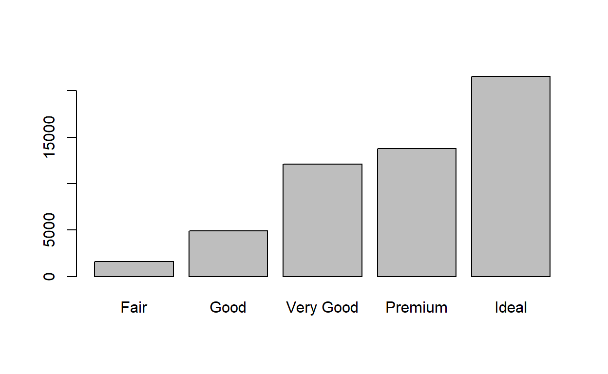
barplot(c,col=c("red","yellow","black","blue","orange"),main="Bar Plot of Cut")
text(c,labels=c,col="white",pos=1)
# col argument fills the bar
# main argument adds title
#ylim argument arranges the y-axis
#names.arg argument changes the bar names
#text argument shows the frequencies on the plot.
#chas is the name of the frequency table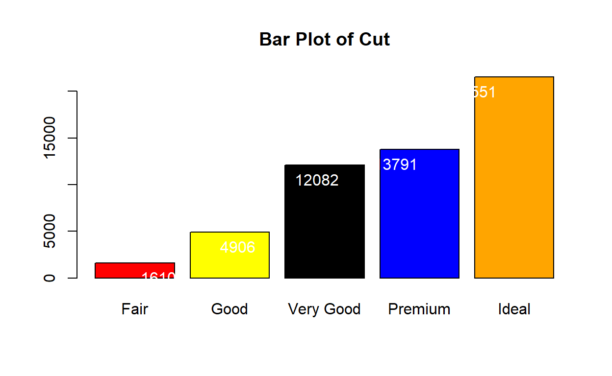
Note: Bar plots are sometimes are used in the illustration of numerical variable.
Numerical Variables
As a numerical EDA, the summary statistics including mean, median, standard deviation etc. are considered. You can find how to do in R above.
Histogram: A histogram represents the frequencies of values of a variable bucketed into ranges. Histogram is similar to bar chat but the difference is it groups the values into continuous ranges. Each bar in histogram represents the height of the number of values present in that range.
Research Question 3
What is the distribution of carat?
hist(diamonds$carat) #hist function is used to draw histogram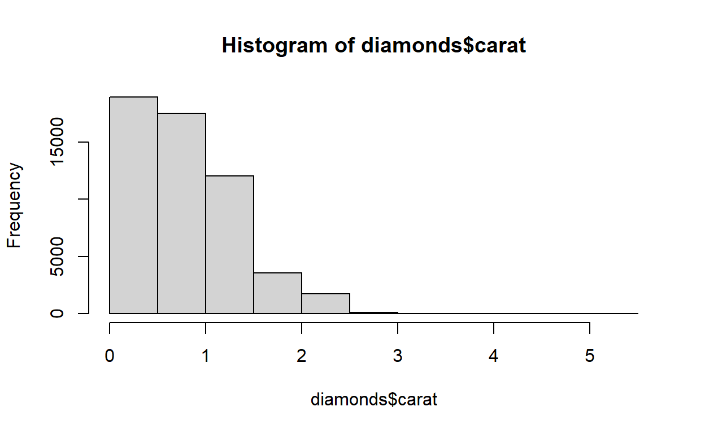
hist(diamonds$carat,col="red",main="Histogram of Carat",xlab="Frequency of Carat")
#xlab changes the x axis name. 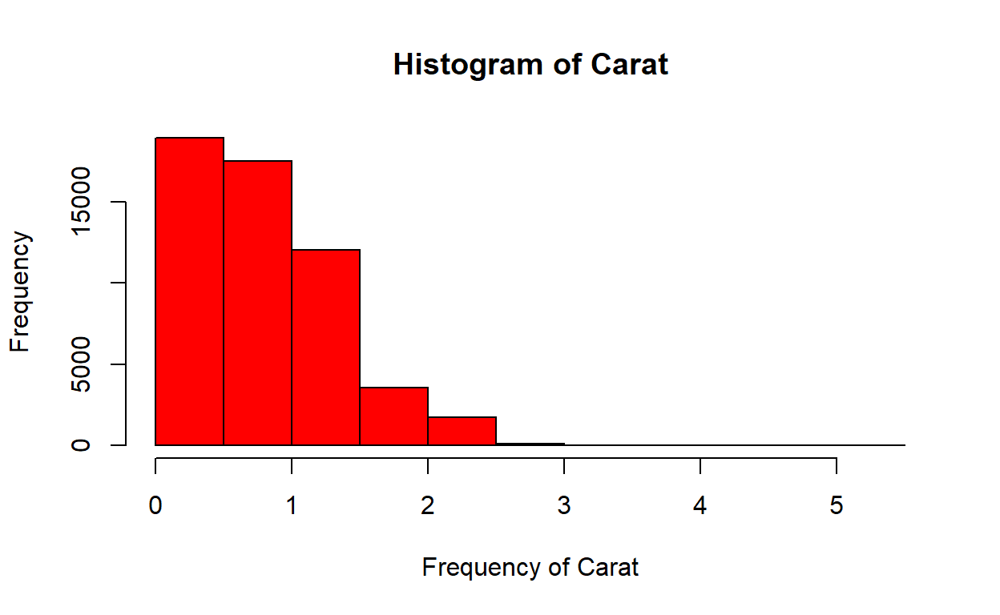
Same Histogram with different bin
Bin: The bar in the histogram is called bin.
hist(diamonds$carat,col="red",main="Histogram of Carat",xlab="Frequency of Carat",breaks = 20)
#xlab changes the x axis name.
#breaks sets the number of bin in the histogram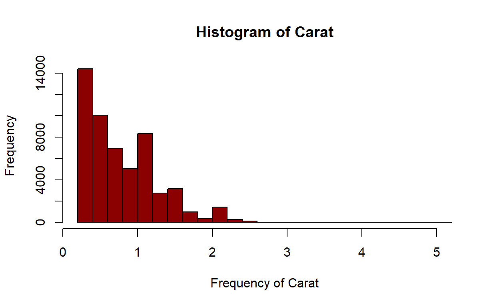
Let’s make it more informative by adding the central tendency measures to the histogram.
hist(diamonds$carat,col="darkred",main="Histogram of Carat",xlab="Frequency of Carat",breaks = 20)
abline(v = mean(diamonds$carat),col = "royalblue", lwd = 2) #abbline add the vertical or horizontal line
abline(v = median(diamonds$carat),col = "orange",lwd = 2)
legend(x = "topright", # location of legend within plot area
c("Mean", "Median"),
col = c("royalblue", "orange"),
lwd = c(2, 2, 2))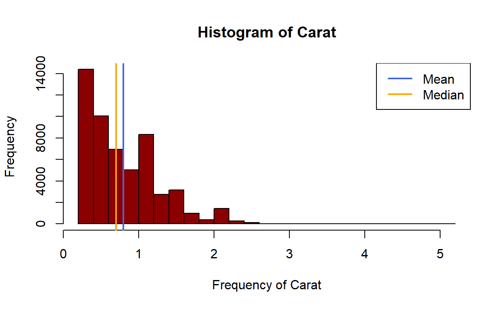
The carat of diamonds has a multimodal and right skewed distribution. The average and median of carats are close to each other, and they show that the center of the carat of the diamonds is less than 1. The histogram shows that carat of the most of the diamonds are between 0-1 carat. The diamond database has a few number of valuable diamonds in terms of carat.
Density Plot: A density plot is a representation of the distribution of a numeric variable. It uses a kernel density estimate to show the probability density function of the variable see more. It is a smoothed version of the histogram and is used in the same concept.
d = density(diamonds$carat)
print(d)
#Bandwidth is a parameter used for arranging the degree of smoothness.##
## Call:
## density.default(x = diamonds$carat)
##
## Data: diamonds$carat (53940 obs.); Bandwidth 'bw' = 0.04827
##
## x y
## Min. :0.0552 Min. :0.0000000
## 1st Qu.:1.3301 1st Qu.:0.0001509
## Median :2.6050 Median :0.0037733
## Mean :2.6050 Mean :0.1959014
## 3rd Qu.:3.8799 3rd Qu.:0.1916445
## Max. :5.1548 Max. :1.7672776plot(d,col="red",main="Density Plot of Carat",type="l")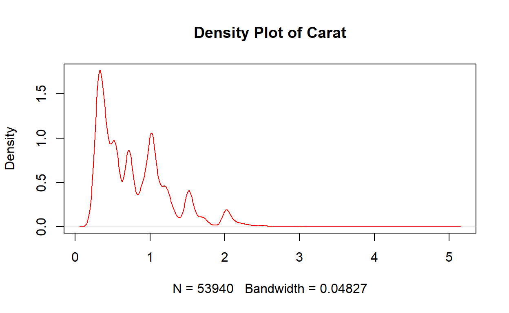
Interpretation
It has a multimodal and right distribution.
Histogram with density plot
If you would like to draw a histogram with density plot, you should
use prob=T argument.
hist(diamonds$carat,col="red",main="Histogram of Carat",xlab="Frequency of Carat",breaks = 20,prob=T)
lines(density(diamonds$carat),col="blue",main="Density Plot of Carat",type="l")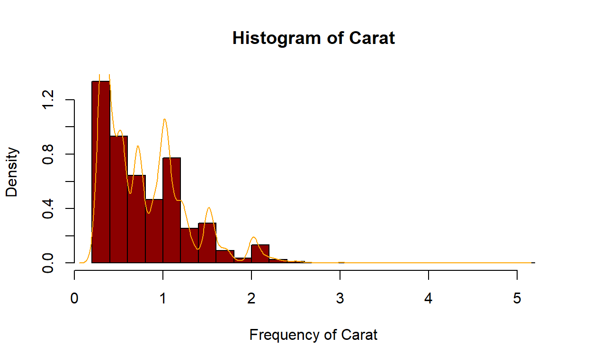
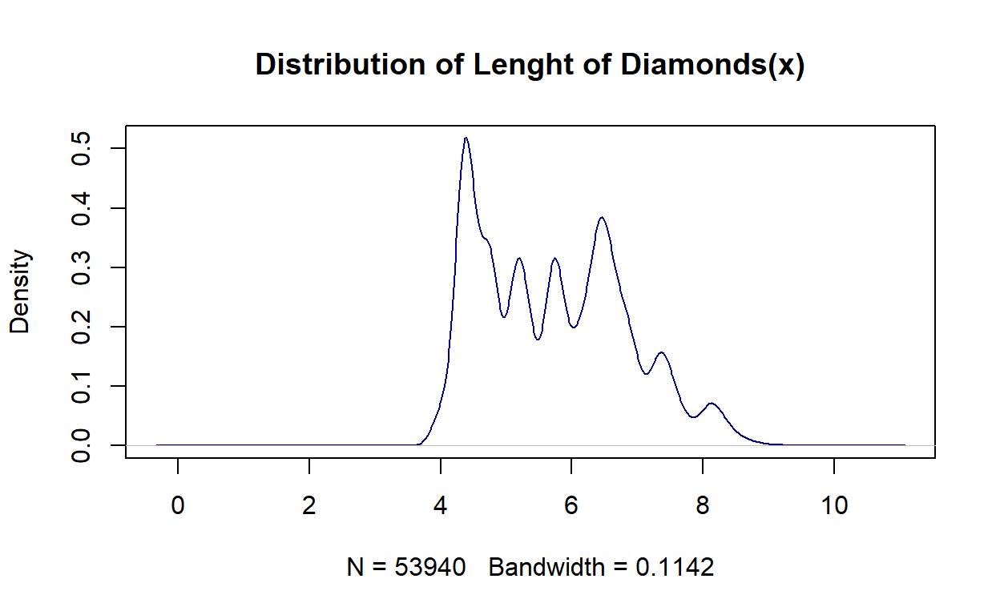
Box and Whiskers Plot: It is created based on Tukeys Five Number Summary including minimum, maximum, median, first and third quartile. The box plot can be used for two main purposes,
To investigate the distribution of a univariate numerical variable and checking the existence of outliers. However, it is not a good idea for characterizing the distribution because it cannot visualize the peak points of the distribuion.
To see the relationship between numerical variable and categorical variable with levels or compare a numerical variable with respect to a categorical variable.
Therefore, it is suitable for both univariate and multivariate EDA.
Anatomy of Box Plot

Anatomy of Box Plot
Research Question 3
Within more than 53000 diamonds, are diamonds with extremely valuable or unvaluable available?
boxplot(diamonds$carat)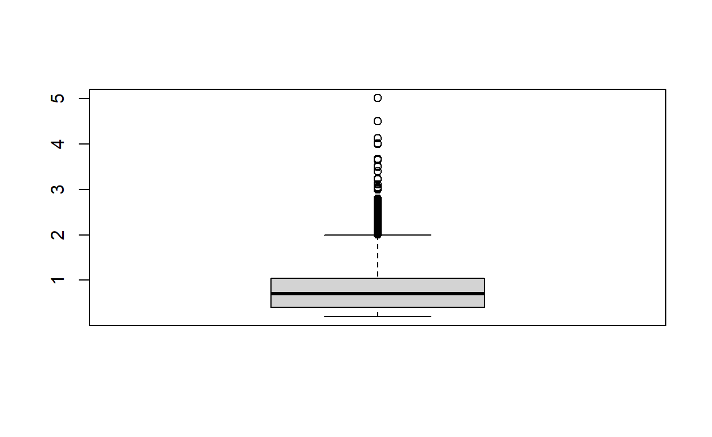
boxplot(diamonds$carat,main="Box Plot of Carat",xlab="Carat",col="red")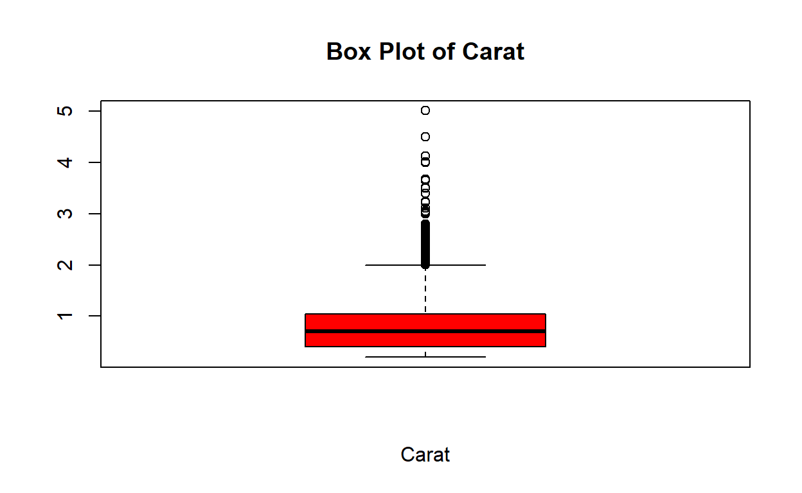
Interpretation: The half of the carat of the diamonds is around 0.5. The variation in middle half of the carat of the diamond is not high. There are some precious diamonds based on their carat.
When your variable has outliers, you can use median as central of tendency measure, and IQR as the measure of variation.
Box Plot on the top of the Histogram
# Draw the boxplot and the histogram
layout(mat = matrix(c(1,2),2,1, byrow=TRUE), height = c(1,8))
par(mar=c(0, 3.1, 1.1, 2.1))
boxplot(diamonds$carat,main="Box Plot and Histogram of Carat ",col="red",horizontal=TRUE,frame=F)
par(mar=c(1, 3.1, 1.1, 2.1))
hist(diamonds$carat,col="red",xlab="Carat",main="")
#xlab changes the x axis name. 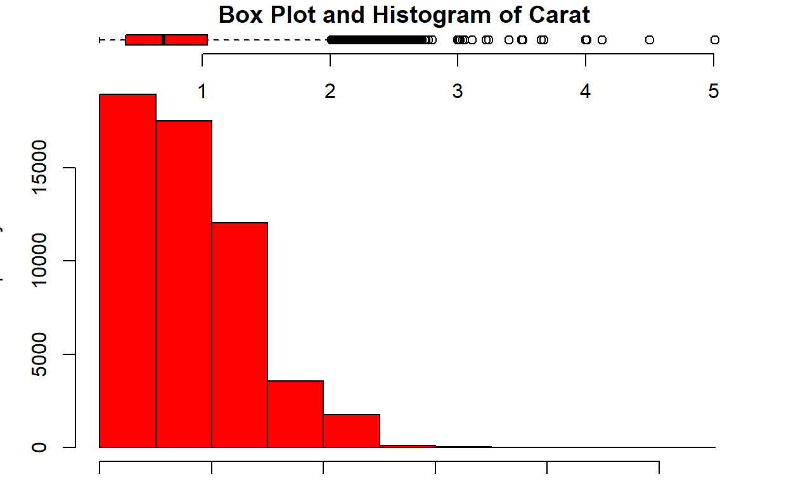
Mid-Exercise 1
What is the variation of Price?
Type a R code to draw a histogram and density plot. Explain what you get.
Multivariate EDA
In order to do Multivariate EDA, we need to take more than one variable into the analysis.
Categorical Variables
Research Question 4
How does the color of diamonds changes over cut type among 53940 diamonds?
If you are analyzing two categorical variables, we can still create a frequency table, called contingency table.
Contingency Table : In statistics, a contingency table, also known as a cross tabulation or crosstab, is a type of table in a matrix format that displays the multivariate frequency distribution of the variables. They are heavily used in survey research, business intelligence, engineering and scientific research. -Vikipedia :)
You can create contingency table by using table() in
R.
table(diamonds$color,diamonds$cut)##
## Fair Good Very Good Premium Ideal
## D 163 662 1513 1603 2834
## E 224 933 2400 2337 3903
## F 312 909 2164 2331 3826
## G 314 871 2299 2924 4884
## H 303 702 1824 2360 3115
## I 175 522 1204 1428 2093
## J 119 307 678 808 896You can display the contingency table in different formats.
Mosaic Plot: A mosaic plot is a graphical display of the cell frequencies of a contingency table in which the area of boxes of the plot are proportional to the cell frequencies of the contingency table. This procedure can construct mosaic plots for up to four-way tables.
mosaicplot(~diamonds$color+diamonds$cut)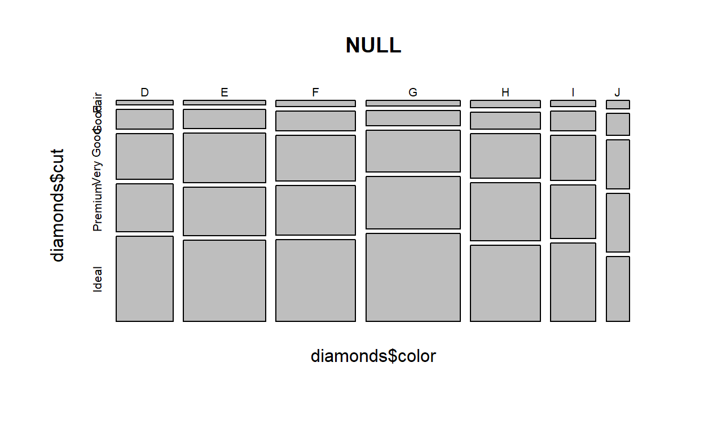
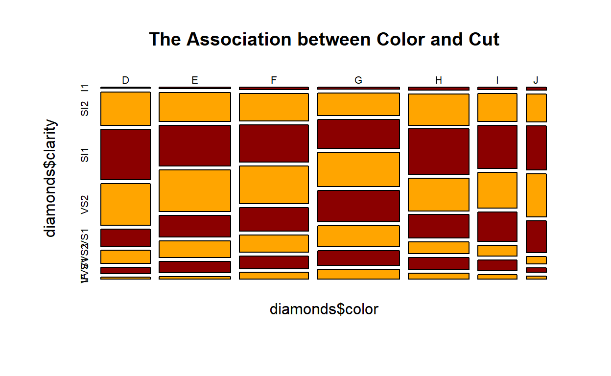
Interpretation
We can say that the mostly occurring color between ideal cut diamonds is G color. This example also indicates the weakness of mosaic plot. The interpretation is harder when we have more than 3 levels for each variable.
Grouped Bar Plot: It is an efficient tool to display the association between two categorical variables.
counts = table(diamonds$color,diamonds$cut)
barplot(counts, main="Color Distribution by Cut Type",
xlab="Median value of Income", col=c("grey","darkred","orange","black","maroon","gold1","darkgreen"),
legend = rownames(counts),beside=TRUE)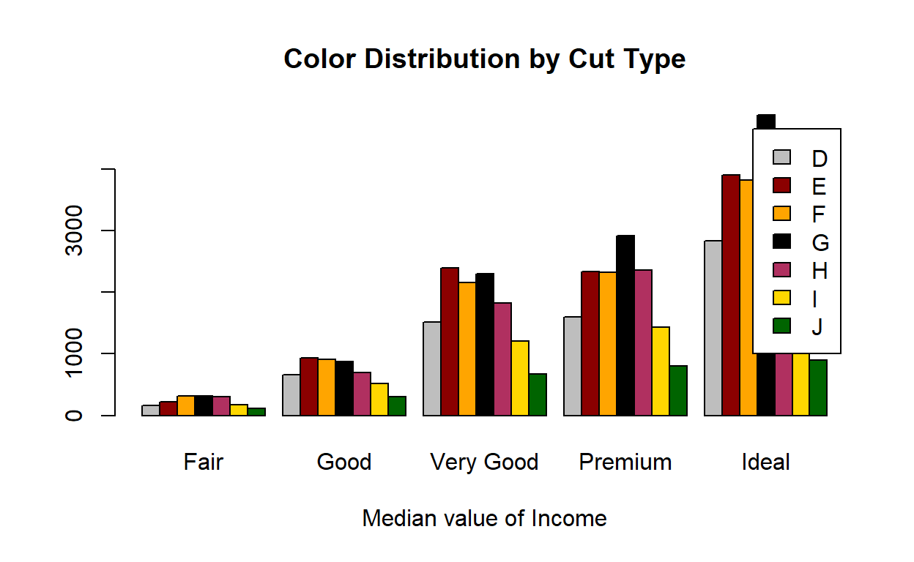
Interpretation
It can be said that the frequency of color J increases as the quality of diamond cut increases. Also, the plot shows that most of the diamonds have color G.
What else?
Stacked Bar Plot: A stacked
barplot is very similar to the grouped barplot above. The subgroups are
just displayed on top of each other, not beside. The stacked barchart is
the default option of the barplot() function in base R, so
you do not need to use the beside argument.
counts = table(diamonds$color,diamonds$cut)
barplot(counts, main="Color Distribution by Cut Type",
xlab="Cut Type", col=colors()[c(22,32,42,52,62,72,82)],
legend = rownames(counts))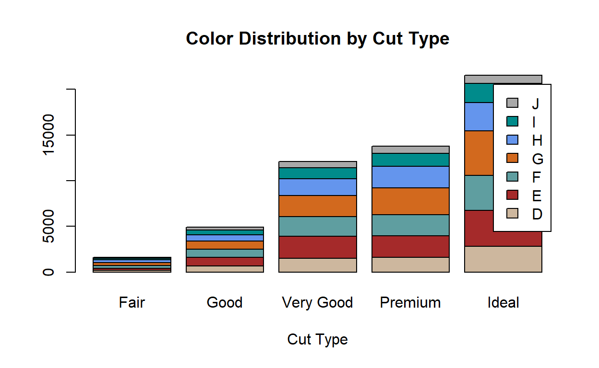
The interpretation is in the previous plot.
Continuous Variables
Research Question 5
What is the association between carat and price within 53940 diamonds having different properties?
Scatter Plot: Scatter plot is a graphical way used to display the relationship between two numeric variables by using dots. Each dot represents an observation. Their position on the X (horizontal) and Y (vertical) axis represents the values of the 2 variables.
plot(diamonds$carat,diamonds$price)
#logic-> plot(independent variable, dependent variable)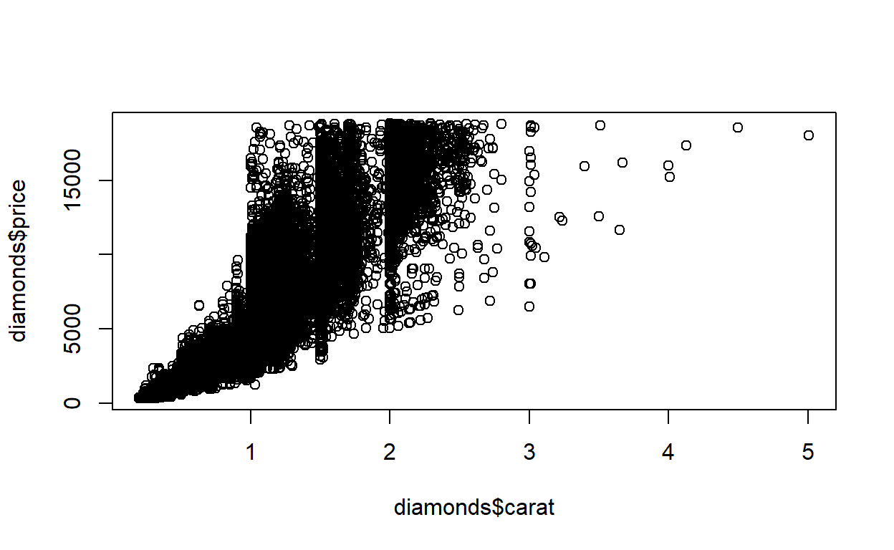
plot(diamonds$carat,diamonds$price,main="The Association btw Carat and Price",xlab="Carat",ylab="Price",col="darkred",pch=12,cex=1)
#cex=size of dots
#pch=point type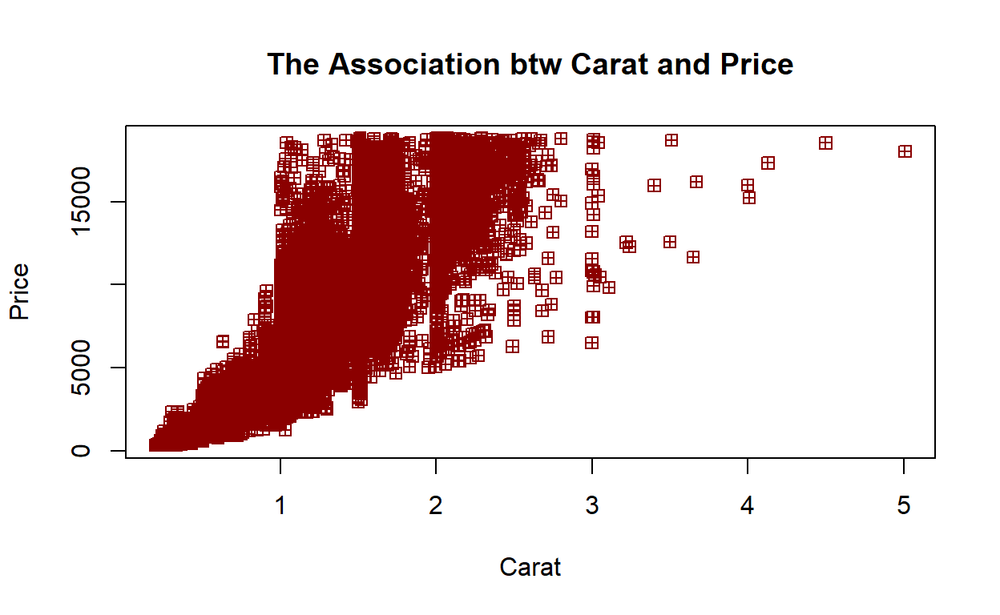
The plot indicates the positive association between two attributes. It is seen that when the carat increases, the prices increases. However, it is also seen that there are some observations, which can be labelled as outlier, that distords the relationship.
Scatter Plot with Polynomial Curve
plot(diamonds$carat,diamonds$price,main="The Association btw Carat and Price",xlab="Carat",ylab="Price",col=rgb(0.4,0.4,0.8,0.6),pch=16,cex=1,ylim=c(-3500,17000))
model <- lm(diamonds$price~diamonds$carat)
# I can get the features of this model :
#summary(model)
#model$coefficients
#summary(model)$adj.r.squared
# For each value of x, I can get the value of y estimated by the model, and add it to the current plot !
myPredict <- predict( model )
ix <- sort(diamonds$carat,index.return=T)$ix
lines(diamonds$carat[ix], myPredict[ix], col=2, lwd=0.5 )
# I add the features of the model to the plot
coeff <- round(model$coefficients , 2)
text(3, -2000 , paste("Model : ",coeff[1] , " + " , coeff[2] , "*x" , "\n\n" , "P-value adjusted = ",round(summary(model)$adj.r.squared,2)))
You can customize your scatter plot using the following arguments in the plot function.
cex = shape size
lwd = line width
col = control colors
lty = line type
pch = marker shape
type = link between dots
Categorical and Numerical Variables
Research Question 6
How cut types of the diamonds affected the prices for 53940 diamonds?
Box and Whisker Plot It is probably the most commonly used chart type to compare distribution of several groups.
boxplot(diamonds$price~diamonds$cut,main="The Boxplot of Diamond Prices by Cut",col=colors()[c(25,35,45,55,65)],xlab="Cut Type",ylab="Price",ylim=c(0,25000))
legend("topleft", legend = levels(diamonds$cut) ,
col=colors()[c(25,35,45,55,65)] , bty = "n", pch=20 , pt.cex = 1, cex = 1, horiz = T, inset = c(0.01, 0.01))
#inset set the position of legend
#horiz = add legend horizontally
Interpretation
The median prices for each cut type are close to each other, but upper tail of whiskers indices that the price of premium cut diamonds is the highest among them and it reduces as quality of cut type reduces. Thus, a visual association is detected, but it requires further analysis. On the other hand, all of them have outlier observations and might have right skewed distribution but more visual technique should be considered.
Mid-Exercise 2
How diamonds prices distribute over color type?
Research Question 7
How diamonds prices distribute over cut type and depth?
Here, we need a transformation because we aim to analze a numerical variable(price) by two categorical variables(cut and depth).
diamonds$depth_factor = ifelse(diamonds$depth<mean(diamonds$depth),"Below Average","Above Average")# I make the boxplot, asking to use the 2 factors : depth factor and cut:
par(mar=c(3,4,3,1))
myplot <-
boxplot(price ~ depth_factor*cut , data=diamonds,
boxwex=0.4 , ylab="Price",
main="The Box Plot of Price by Cut and Depth" ,
col=c("slateblue1" , "tomato") ,
xaxt="n",ylim=c(0,30000))
my_names <- sapply(strsplit(myplot$names , '\\.') , function(x) x[[2]] )
my_names <- my_names[seq(1 , length(my_names) , 2)]
axis(1, at =seq(0.5 , 10 , 2),labels = my_names ,
tick=FALSE , cex=0.3)
# Add the grey vertical lines
for(i in seq(0.5 ,10 , 2)){
abline(v=i,lty=1, col="grey")
}
# Add a legend
legend("topright", legend = c("Above", "Below"),
col=c("slateblue1" , "tomato"),
pch = 15, bty = "n", pt.cex = 3, cex = 1.2, horiz = F, inset = c(0.1, 0.1))
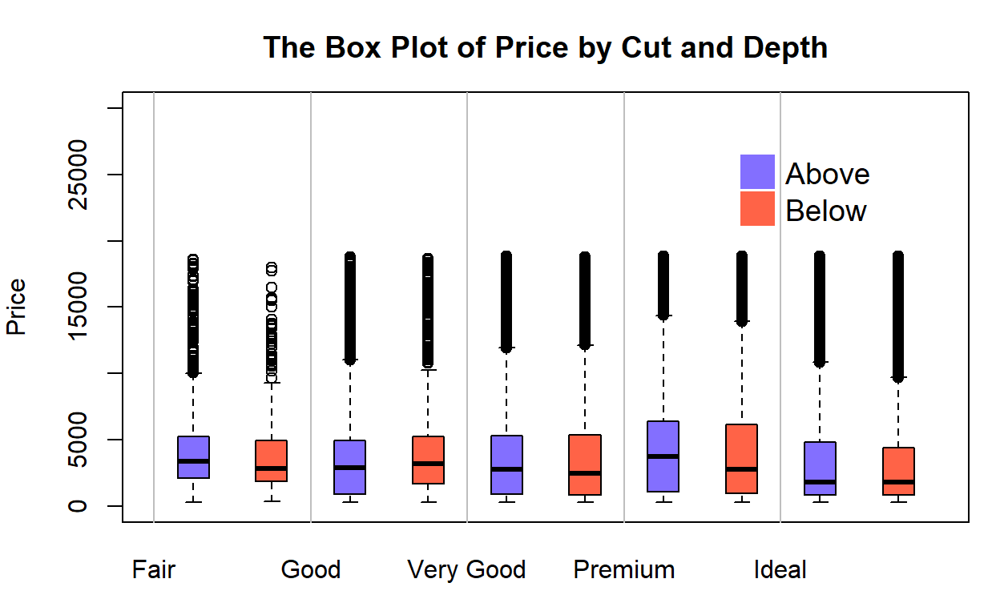
Interpretation
The price of diamonds does not show a visual difference by their depth for each cut type.
Research Question 8
How the carat of the diamonds related with the price of 539400 diamonds?
We are looking for the relationship between two quantitative behaviour. The fastest way to do is either drawing scatter plot or calculating correlation.
While answering this question, we will also check the association between other quantitative variables simultaneously.
Scatter Plot Matrix: The graphical distribution of the data displays the story of the data by spending less cognitive effort. If your dataset has more than 2 quantitative variables, you can construct a scatter plot matrix to understand the underlying relationship between them instead of drawing a scatter plot for each pair of the variables one by one.
In this analysis, we need to include only numerical columns. Thus, we will create an index which selects only numerical variables.
index<- unlist(lapply(diamonds, is.numeric)) pairs(diamonds[,index])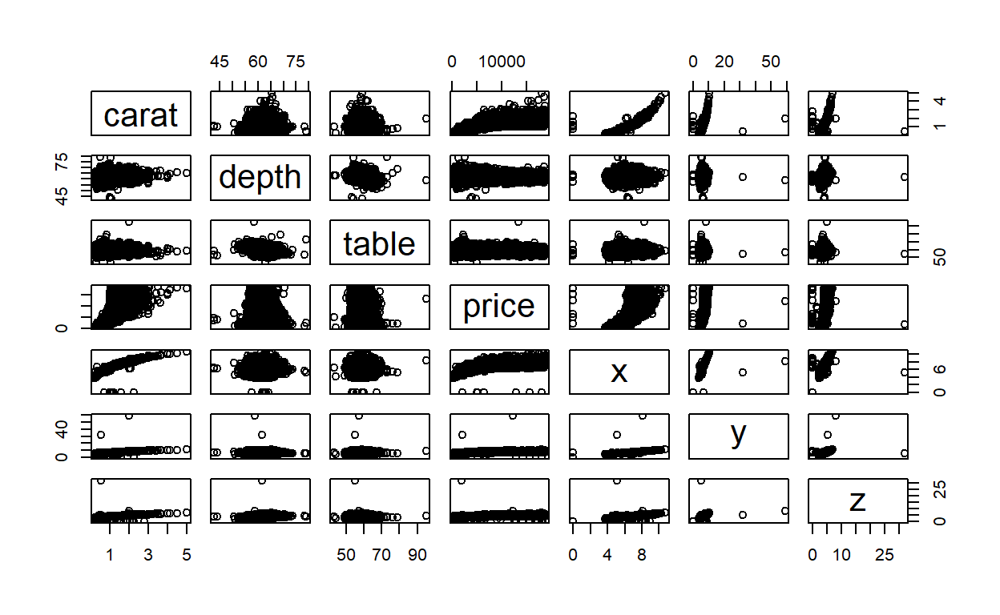
Let’s make it more informative.
library(PerformanceAnalytics)
chart.Correlation(diamonds[,index])## Warning: package 'PerformanceAnalytics' was built under R version 4.1.1## Zorunlu paket yükleniyor: xts## Warning: package 'xts' was built under R version 4.1.3## Zorunlu paket yükleniyor: zoo## Warning: package 'zoo' was built under R version 4.1.3##
## Attaching package: 'zoo'## The following objects are masked from 'package:base':
##
## as.Date, as.Date.numeric##
## ################################### WARNING ###################################
## # We noticed you have dplyr installed. The dplyr lag() function breaks how #
## # base R's lag() function is supposed to work, which breaks lag(my_xts). #
## # #
## # If you call library(dplyr) later in this session, then calls to lag(my_xts) #
## # that you enter or source() into this session won't work correctly. #
## # #
## # All package code is unaffected because it is protected by the R namespace #
## # mechanism. #
## # #
## # Set `options(xts.warn_dplyr_breaks_lag = FALSE)` to suppress this warning. #
## # #
## # You can use stats::lag() to make sure you're not using dplyr::lag(), or you #
## # can add conflictRules('dplyr', exclude = 'lag') to your .Rprofile to stop #
## # dplyr from breaking base R's lag() function. #
## ################################### WARNING #####################################
## Attaching package: 'PerformanceAnalytics'## The following object is masked from 'package:graphics':
##
## legend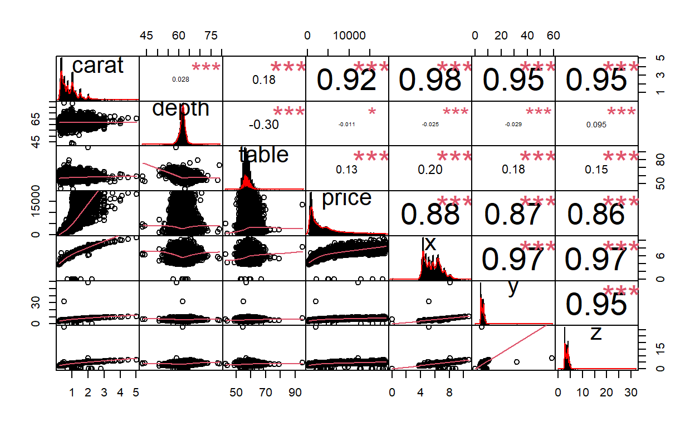
Interpretation
The output shows that there is a strong linear association between carat and price of the 53940 diamonds. It also shows the association between pairs of the variables in both numerically and visually.
As you know, R has many number of packages for visualization, better than Python. We will cover some of those in this lab.
Lattice Plots
It is a powerful and elegant high-level data visualization system, with an emphasis on multivariate data. It generates a plot splitted into the level of a categorical variable.
What it has?

Research Question 9
How the cut type affected the association between price and carats of 539400 diamonds?
Scatter Plot in Lattice
lattice library offers the xyplot() function.
It builds a scatterplot for each levels of a factor automatically.
library(lattice)
xyplot(price ~ carat | cut , data=diamonds , pch=20 , cex=0.5 , col=rgb(0.2,0.4,0.8,0.5) )## Warning: package 'lattice' was built under R version 4.1.2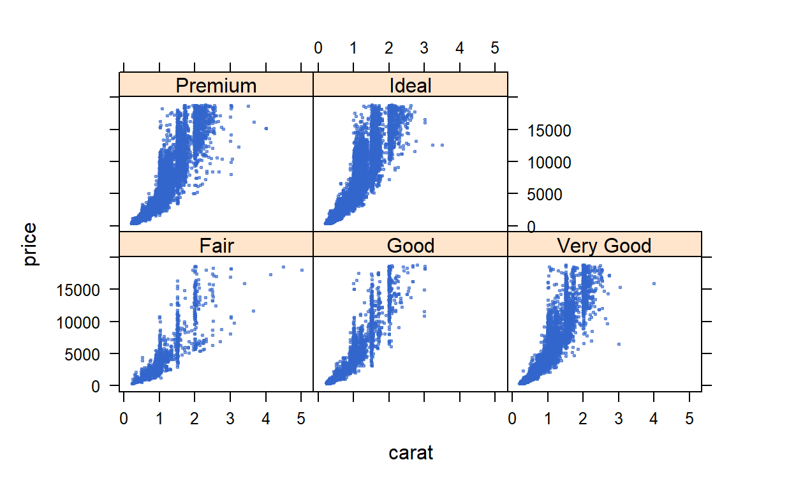
Interpretation Carat and price have positive relationship in each cut type as we expected. However, it is also noted that some independent observations that brokes the relationship exist.
You can also make your scatter plot colorful by the level of one
factor variable using xyplot().
xyplot(price ~ carat , data=diamonds,group = cut,auto.key = TRUE)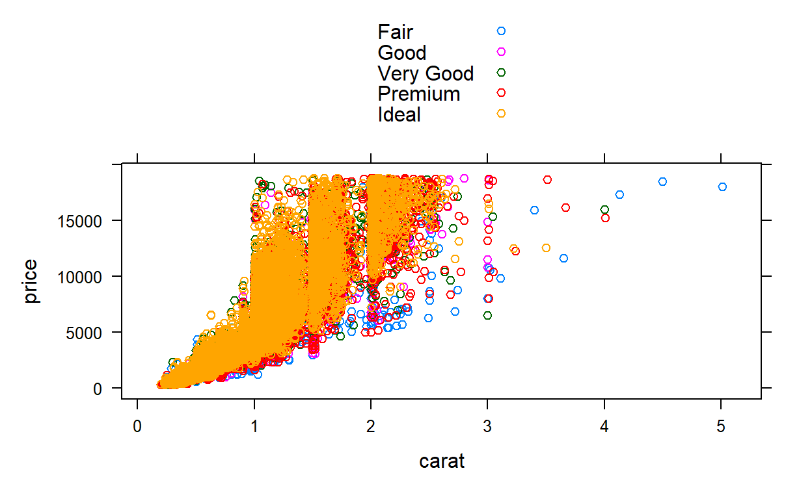
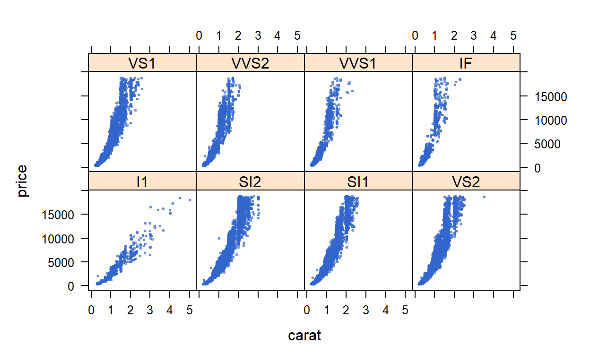
Research Question 10?
How does the price of diamonds distribute by color of diamonds?
There are several ways to answer this question, and see the possible solutions below.
Histogram
histogram(~ price | color, data = diamonds, breaks = 20)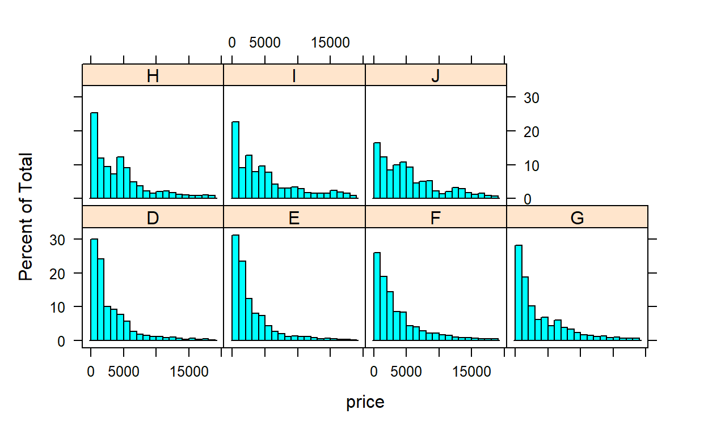
Interpretation We can say that price has multimodal distribution for color H, I and J and right skewed distribution for the rest of the colors.
Density Plot
densityplot(~ price | color, data = diamonds)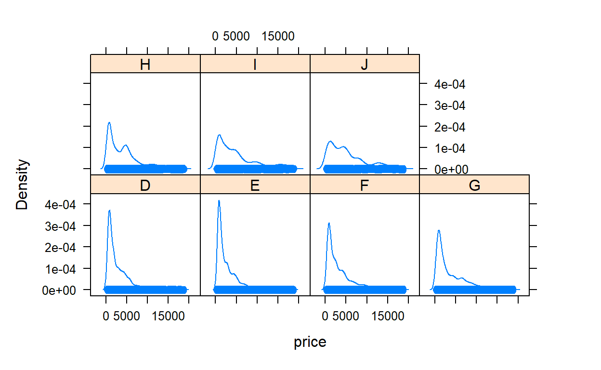
densityplot(~price ,group=color, data = diamonds,auto.key = TRUE)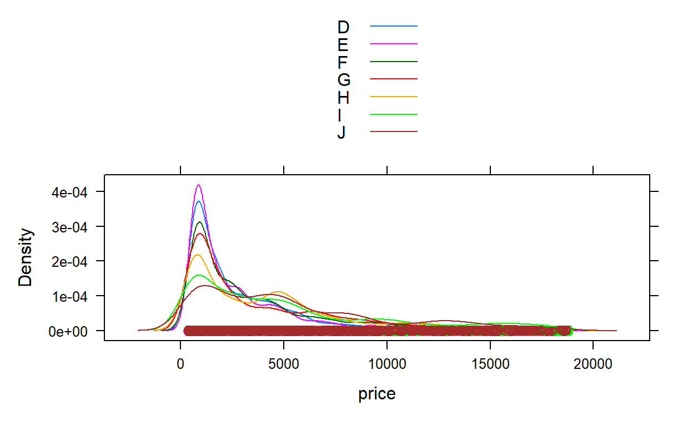
Box and Violin Plot
bwplot(~ price | color, data = diamonds)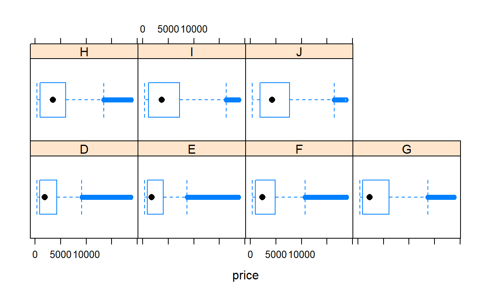
Violin Plot: Violin plots are similar to box plots, except that they also show the kernel probability density of the data at different values.
bwplot(~ price | color, data = diamonds,panel = panel.violin)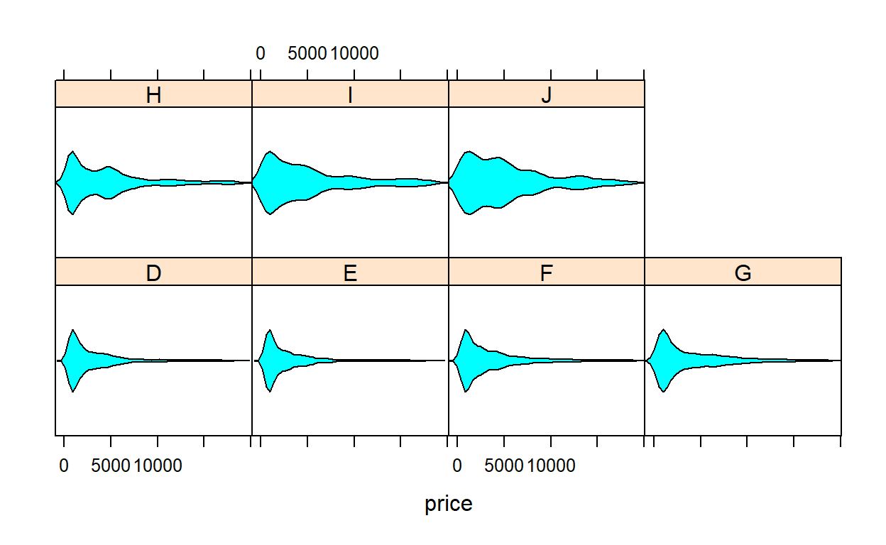
Recall Research Question 6
bwplot(price ~ cut, data = diamonds)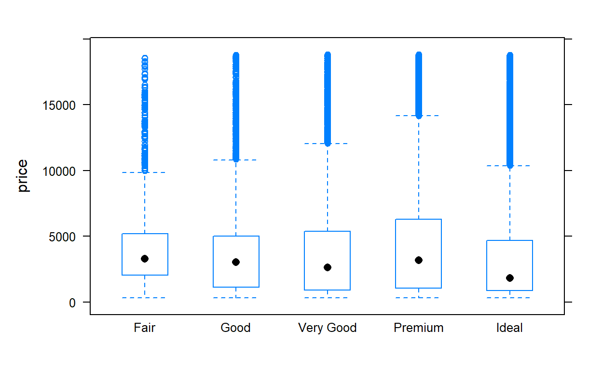
Recall Research Question 4
Heat Map
df<-table(diamonds$color,diamonds$cut)
levelplot(df)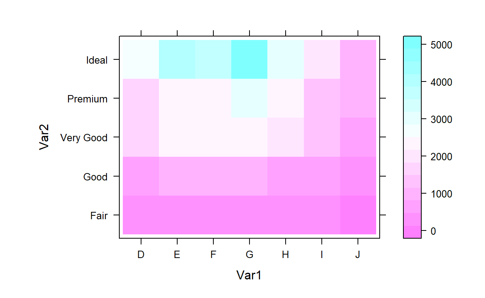
Exercise
Mid-Exercise 1
How the cut type affected the association between price and carats of 539400 diamonds?
Please click here to download your exercise.
References
https://r4ds.had.co.nz/exploratory-data-analysis.html#covariation
https://www.guide2research.com/research/how-to-write-a-research-question